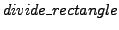
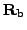
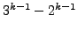
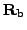
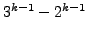
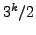
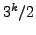
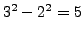
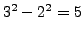

Most of the work in the subdivision procedures ( for the
FHT and
 for the MFHT) goes into two stages.
Firstly, arrays are calculated that are to be passed on to children.
For the FHT plane finder these are the eight ( in general)
 normalised distance arrays, whereas for the MFHT
line finder,
is the only such array
(there are
 arrays in general).
In both cases the calculation of an array element involves two calculations:
an addition and multiplication by two in the FHT, an addition and a division
by two in the MFHT. The second time consuming part is the voting, i.e.
the test for intersection of hyperplane with hypersphere/hypercube.
For the FHT plane finder this is just a single comparison for each of
the eight child cubes (
in general)
 normalised distance arrays, whereas for the MFHT
line finder,
is the only such array
(there are
 arrays in general).
In both cases the calculation of an array element involves two calculations:
an addition and multiplication by two in the FHT, an addition and a division
by two in the MFHT. The second time consuming part is the voting, i.e.
the test for intersection of hyperplane with hypersphere/hypercube.
For the FHT plane finder this is just a single comparison for each of
the eight child cubes ( comparisons generally) whereas for the MFHT
line finder, 9/2 comparisons (on average) and four boolean
expressions are evaluated (for general
comparisons generally) whereas for the MFHT
line finder, 9/2 comparisons (on average) and four boolean
expressions are evaluated (for general  these figures become
 and
these figures become
 and  respectively). All these figures are summarised in
table 5.1.
respectively). All these figures are summarised in
table 5.1.
Since increases faster than  , the FHT will overtake the MFHT for
speed as
, the FHT will overtake the MFHT for
speed as  increases. In fact tests have shown the MFHT plane fitter
to be about 25% slower than the FHT. The memory space
advantage of the MFHT is also reduced, since 
new arrays are required at each subdivision as against eight for the FHT
(which again could be altered so as to require only one array, at the
cost of some loss of speed).
increases. In fact tests have shown the MFHT plane fitter
to be about 25% slower than the FHT. The memory space
advantage of the MFHT is also reduced, since 
new arrays are required at each subdivision as against eight for the FHT
(which again could be altered so as to require only one array, at the
cost of some loss of speed).